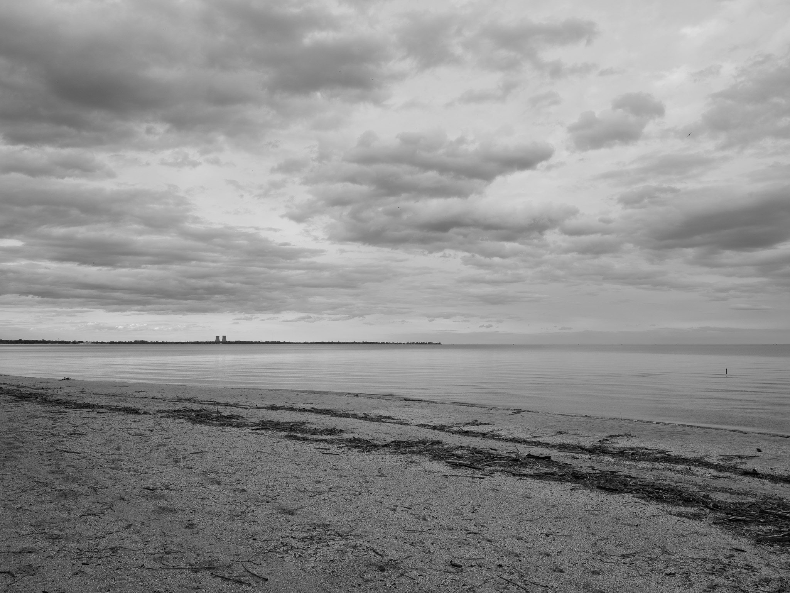
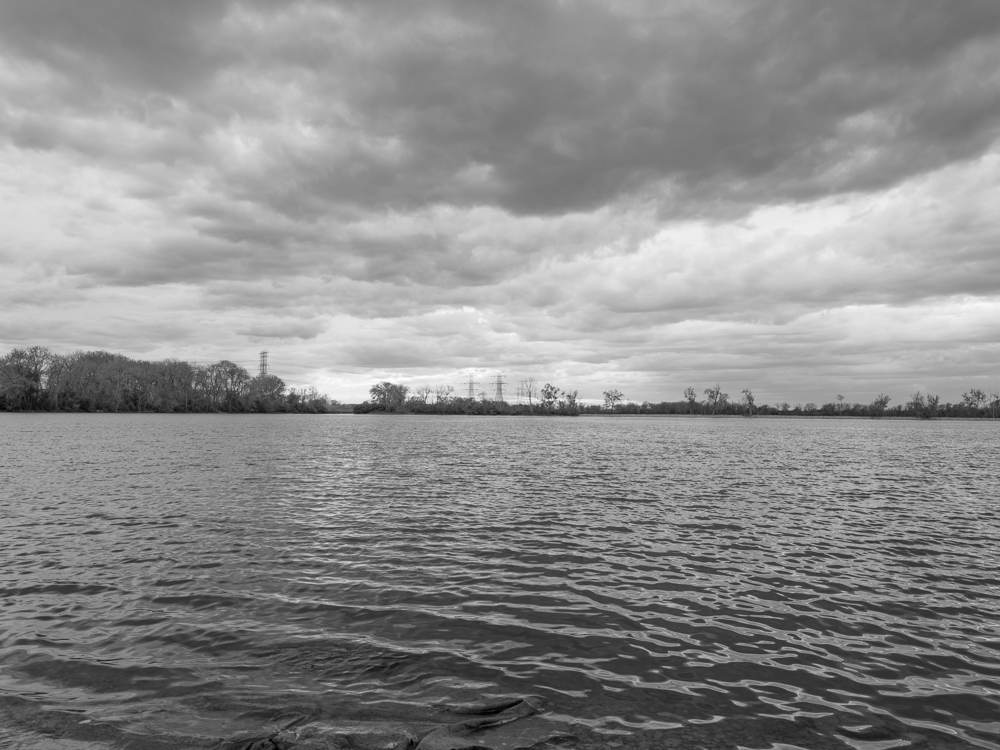
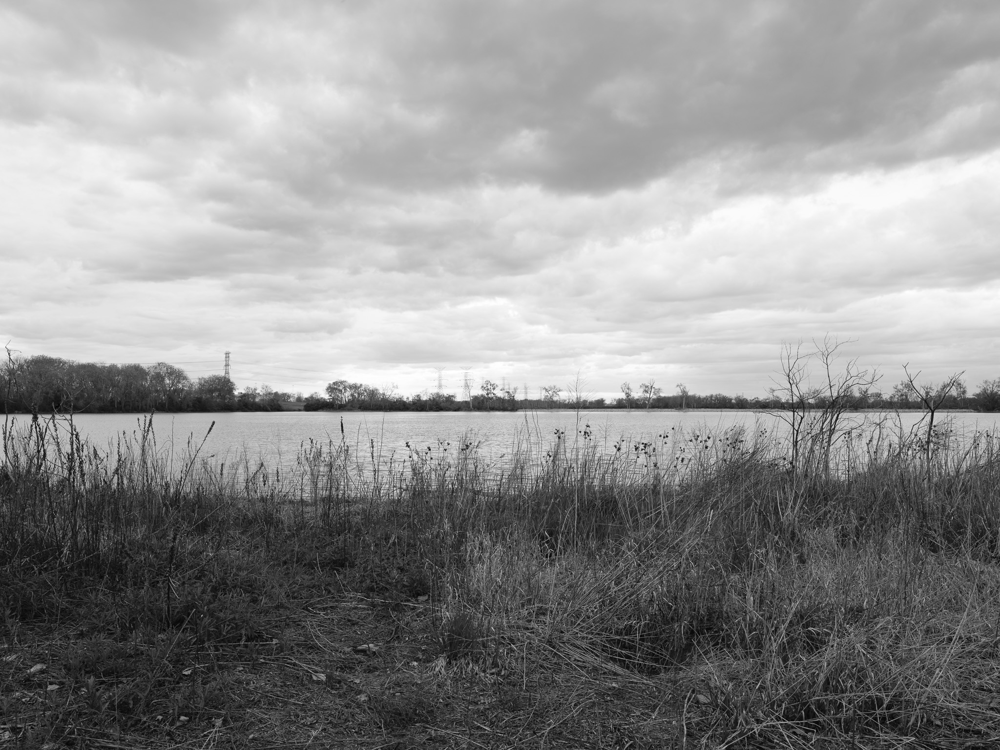
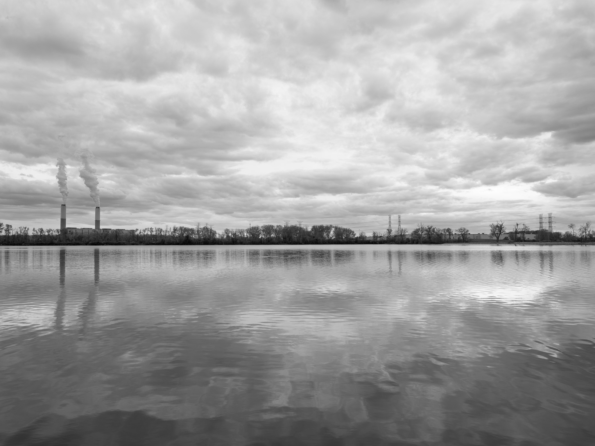
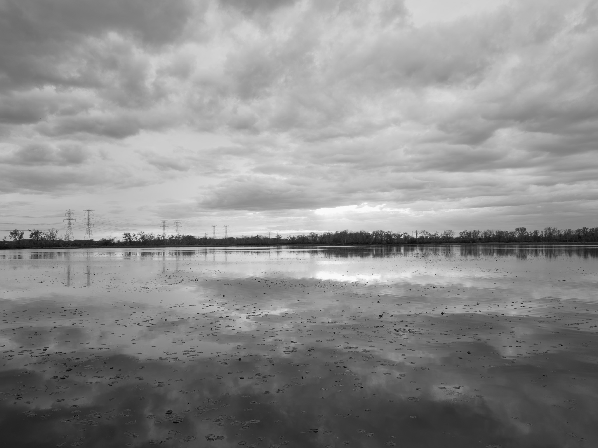
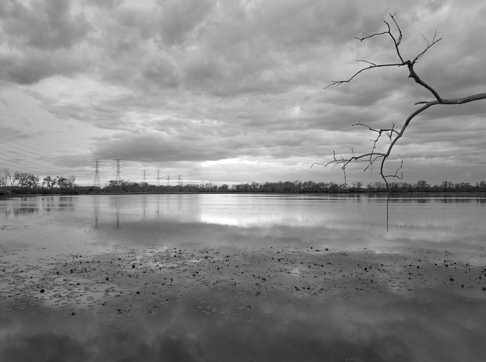
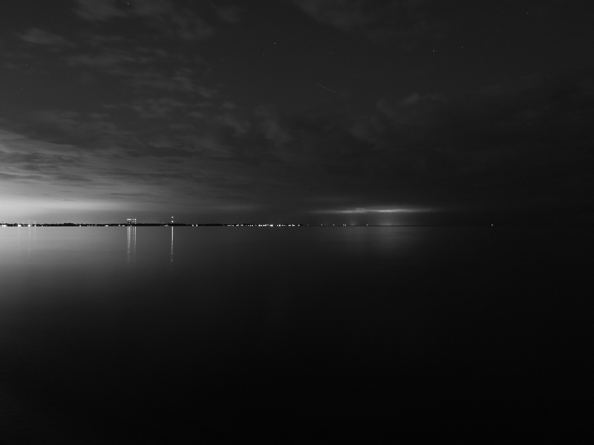

Public Lands Institute
Map
Archive
About
William C. Sterling State Park
MI

William C. Sterling State Park 1 · 2026-05-06
_DSF1864.jpg

William C. Sterling State Park 2 · 2026-05-06
_DSF1885.jpg

William C. Sterling State Park 3 · 2026-05-06
_DSF1888.jpg

William C. Sterling State Park 4 · 2026-05-06
_DSF1897.jpg

William C. Sterling State Park 5 · 2026-05-06
_DSF1902.jpg

William C. Sterling State Park 6 · 2026-05-06
_DSF1906.jpg

William C. Sterling State Park 7 · 2026-05-06
_DSF1941.jpg
View all 7 images →
← Ford Marsh Unit, Detroit River International Wildlife Refuge
Killdeer Plains Wildlife Area →